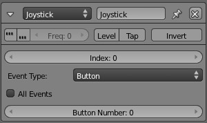
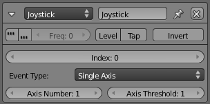
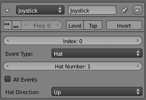
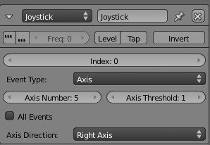

Сенсор «Джойстик» -- Joystick Sensor¶
Сенсор Joystick запускає кожного разу, коли джойстик рухається. Він також виявляє події ряду допоміжних контролерів на пристрої джойстика (перехрестя, кнопки тощо). Може використовуватися більше ніж один джойстик (дивіться "Index"). Точна розстава контролерів джойстика буде залежати від типу та моделі використовуваного джойстика.

{kind=link}
Сенсор «Джойстик» -- Joystick.
Властивості -- Properties¶
See Sensor Common Options for common options.
- Тип Події -- Event Type
- Меню для вибору, яка подія джойстика використовується, кожна описується нижче.
- Індекс -- Index
- Визначає, який джойстик використовується.
- Усі Події -- All Events
- Сенсор запускає для усіх подій цього поточного типу джойстика.
Одна Вісь -- Single Axis¶
Визначає переміщення по одиничній Осі джойстика.

{kind=link}
Joystick: Single Axis.
- Номер Осі -- Axis Number
Вісь для визначення змін.
- 1 = Горизонтальна вісь (вліво/управо)
- 2 = Вертикальна вісь (вперед/назад)
- 3 = Веслова вісь уверх/вниз
- 4 = Обкрутна вісь джойстика вліво/управо
- Поріг Осі -- Axis Threshold
- Поріг, з якого джойстик стріляє.
Hat -- Перехрестя¶
Виявляє переміщення специфічного контролера перехрестя, міні-джойстика на джойстику.

{kind=link}
Joystick: Hat.
- Номер Перехрестя -- Hat number
- Визначає, яке перехрестя використовується (макс. 2).
- Напрям Перехрестя -- Hat Direction
- Визначає напрям для використання: уверх, вниз, вліво, управо, уверх/управо, вниз/управо, вниз/вліво.
Вісь -- Axis¶

{kind=link}
Joystick: Axis.
- Номер Осі -- Axis Number
- Визначає вісь (1 або 2).
- Поріг Осі -- Axis Threshold
- Поріг, з якого джойстик стріляє.
- Напрям Осі -- Axis Direction
Визначає напрям для використання:
- (Axis Number = 1) Джойстик Вліво, Управо, Уверх, Вниз
- (Axis Number = 2) Весло верхнє (Вліво); весло Нижнє (Управо);
- Джойстик обкрут вліво (Уверх) Джойстик обкрут управо (Вниз)